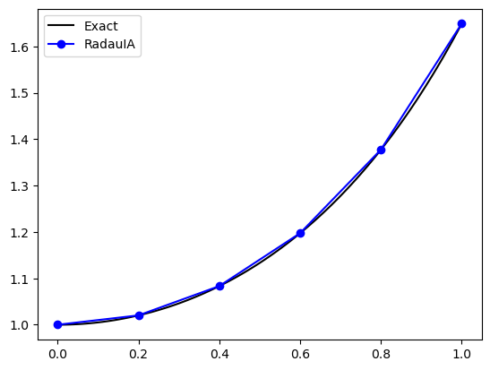

3.2. Solving ODEs using Implicit Methods#
Recall that the general form of an \(s\)-stage Runge-Kutta method is
Expanding out the summations in the stage values \(k_i\)
The stage equations are implicit because the unknown stage values appear on both sides of the equations. So we need to recast the stage values so that we have a system of equations to solve. To make this easier we introduce variables \(Y_i\) for the solution over intermediate intervals of the step
and the expression for the stage values \(k_i\) from (3.2) becomes
Substituting this into equation (3.3) gives
and also into equation (3.2) so the solution over a single step is
For a general non-linear function \(f(t, y)\), equation (3.4) is a system of \(s\) non-linear equations for the unknown stage values \(Y_1, \ldots Y_s\). In practice this system is usually solved using Newton’s method.
To demonstrate the solution using an IRK method we are going to consider the solution of the IVP
using the third-order RadauIA method which has the Butcher tableau
and a step length of \(h = 0.2\)
Substituting the coefficients for the Radau IA method into equation (3.4) we have
Since \(f(t, y) = ty\) then this becomes
This is a system of linear equations, so we can re-write this in the form \(A \mathbf{x} = \mathbf{b}\). Transposing the \(Y_i\) terms to on the left-hand side gives
Writing this as a matrix equation
For the first step, \(t_0 = 0\), \(y_0 = 1\) and \(h = 0.2\) so
Solving the linear system
So the stage values are \(Y_1 = 0.9933\) and \(Y_2 = 1.0112\). Note that although equation (3.4) is generally non-linear, for the test problem \(f(t,y)=ty\) the stage values appear only linearly, resulting in a linear system that can be solved directly.
The solution of the ODE \(y' = f(t, y)\) over a single time step using the third order RadauIA method is
and since here \(y' = ty\) then
So the solution over the first step is
The solution over the range \(t \in [0, 1]\) using the third-order Radau IA method is tabulated below and plotted against the exact solution in Fig. 3.1.
\(n\) |
\(t_n\) |
\(y_n\) |
\(Y_1\) |
\(Y_2\) |
|---|---|---|---|---|
0 |
0.00 |
1.0000 |
- |
- |
1 |
0.20 |
1.0202 |
0.9933 |
1.0112 |
2 |
0.40 |
1.0833 |
1.0127 |
1.0598 |
3 |
0.60 |
1.1973 |
1.0740 |
1.1562 |
4 |
0.80 |
1.3773 |
1.1847 |
1.3131 |
5 |
1.00 |
1.6490 |
1.3592 |
1.5524 |

Fig. 3.1 The solution to the IVP \(y'=ty\), \(t \in [0,1]\), \(y(0)=1\) using the third-order Radau IA method with \(h=0.2\).#